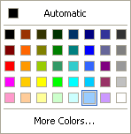
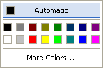

Color Button Actions:
Set Number of Rows/Columns
Changes the number of rows or columns of buttons in the color popup. This can be anywhere from 1 to 16.
Set Color of Button
Sets the color used for the button specified.
First parameter: 0-based row (0-15)
Second parameter: 0-based column (0-15)
Third parameter: Actual color
Save/Load Settings
Saves or loads the color button settings (rows, columns, and color values) to or from a file.
Load 8x5/8x2 Default
The object comes with two default color button settings built in. The 8x5 setting is used by default.
 
Color Button Expressions:
Get Color of Box
Returns the color used for the button specified.
First parameter: 0-based row (0-15)
Second parameter: 0-based column (0-15)